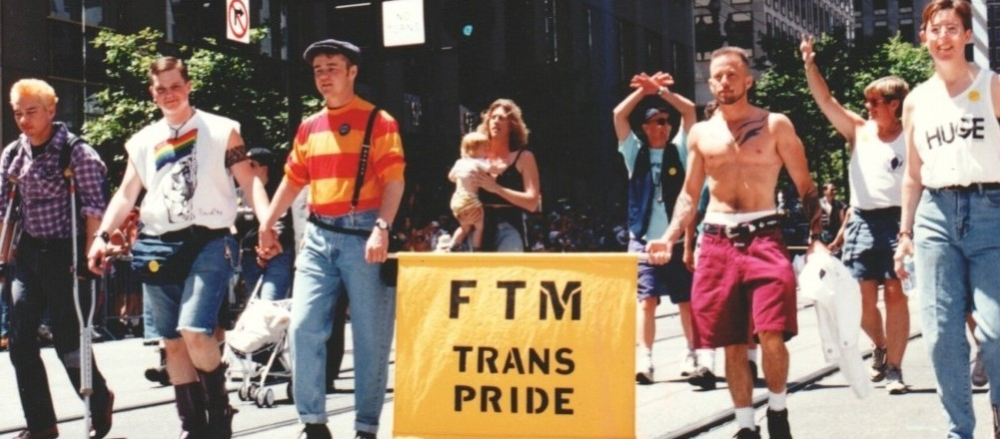

welcome to ftm.gay

1994 FTM Trans Pride © unknown via Digital Transgender Archive

This website is for all FTMs, transgender men, transsexual men,
transmasculine people, nonbinary
people, butches, mascs, kings, and more.
It's also for fellow trans people and cis allies who want to learn more about the FTM experience.
Trans people have always existed & trans people will always exist. Trans rights are human
rights.
God blessed me by making me transsexual for the same reason he made wheat but not bread and fruit but
not
wine: so that humanity might share in the act of creation.
— Julian K. Jarboe
We have a right to live openly and proudly. When our lives are suppressed, everyone is denied an
understanding of the rich diversity of sex and gender expression and experience that exist in human
society.
— Leslie Feinberg
I just don't think I write enough on how much I enjoy life lately. This change, this SEX CHANGE that
is supposed to be so weird, has in reality made me feel LESS weird. I can relax + laugh + not THINK
before I say or do something + it all comes out right + I'm relaxed + I think, 'My God, if they only
knew…'
— Lou Sullivan
The more I hold myself close and fully embrace who I am, the more I thrive.
— Elliot Page
resource list
a list of online stores for FTMs, information on gender-affirming care, and other resources
links
reading list
a list of books by and about trans men and transmasculine people
books